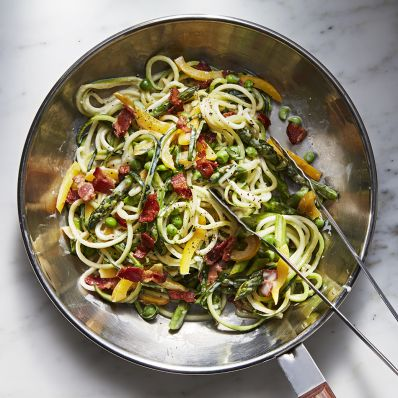
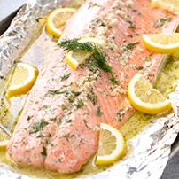
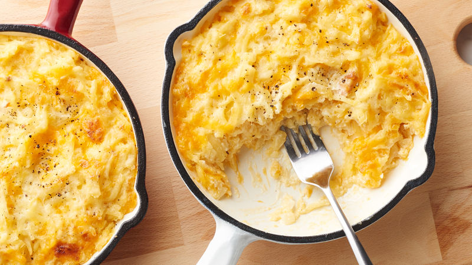
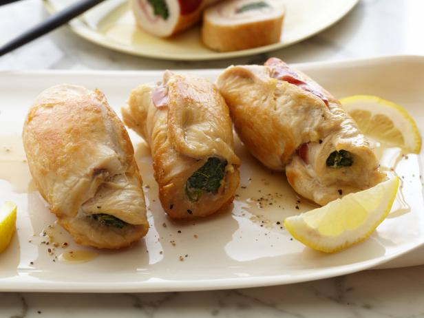

Live Healthy
Content
Homepage
Exercises
A plan for a whole day

Content
Healthy recipes
Junk food effects and how to stop them
Smoking effects and how to stop it
The choice and the recipes of food is important so there will be here
healthy recipes, you could use any day. Some of these recipes will need
equipment.
Zucchini Noodles:

Ingredients:
· 2 medium
zucchini
· 2 Tablespoons
butter
· 3 large cloves
garlic , minced (or to taste)
· 3/4 cup parmesan
cheese (approximately)
· kosher salt or
sea salt, to taste
· black pepper ,
to taste
· 1/4 teaspoon red
chili flakes
Directions:
1.
Cut
zucchini into spirals or noodle strands using the vegetable spiralizer or julienne peeler. Set aside
noodles.
2.
Heat
large pan on medium-high heat. Melt butter, then add garlic. Cook garlic until
fragrant and translucent. Don't let the garlic burn.
3.
Add
zucchini noodles and cook until tender, about 3-5 minutes. Zucchini
noodles cook really fast, so taste a strand as you cook and decide how firm or
"al-dente" you want the zucchini. Don't overcook the zucchini noodles
or else they'll become mush.
4.
Remove
the pan from the heat, add parmesan cheese and season generously with salt and
pepper to taste. Add chili flakes then serve warm.
Baked Salmon:

Ingredients:
·
1 salmon filet
·
1/2 cup salted butter melted
·
4 tablespoons fresh lemon juice
·
8 garlic cloves crushed
·
2 tablespoons finely chopped fresh dill
Directions:
1. Preheat oven to
375 degrees. Line a 4 sided baking sheet with aluminum foil. Place the salmon
in the middle of the foil.
2. In a glass
measuring cup, combine melted butter, lemon juice, garlic, and dill. Whisk
together.
3. Pour butter mixture
directly over salmon. Pull the sides and ends of the aluminum foil up and pinch
together, covering the salmon completely.
4. Bake in the
preheated oven for 15-20 minutes, or until the salmon flakes easily with a
fork.
Hash Brown Casserole:

Ingredients:
·
1 (2 pound) package frozen hash brown potatoes, thawed
·
1/2 cup melted butter
·
1 (10.75 ounce) can condensed cream of chicken soup
·
1 (8 ounce) container sour cream
·
1/2 cup chopped onions
·
2 cups shredded Cheddar cheese
·
1 teaspoon salt
·
1/4 teaspoon ground black pepper
·
2 cups crushed cornflakes cereal
·
1/4 cup melted butter
Directions:
1. Preheat oven to
350 degrees F (175 degrees C).
2. In a large bowl,
combine hash browns, 1/2 cup melted butter, cream of chicken soup, sour cream,
chopped onion, Cheddar cheese, salt and pepper. Place mixture in a 3 quart
casserole dish.
3. In a medium
saucepan over medium heat, saute cornflakes in 1/4 cup melted butter, and
sprinkle the mixture over the top of the casserole.
4. Bake covered in
preheated oven for 40 minutes.
Chicken Saltimbocca:

Ingredients:
·
6 (3-ounce) chicken cutlets, pounded to evenly flatten
·
Salt and freshly ground black pepper
·
6 paper-thin slices prosciutto
·
1 (10-ounce) box frozen chopped spinach, thawed
·
3 tablespoons olive oil
·
1/4 cup grated Parmesan
·
1 (14-ounce) can low-salt chicken broth
·
2 tablespoons fresh lemon juice
Directions:
1. Place the
chicken cutlets flat on the work surface. Sprinkle the chicken with salt and
pepper. Lay 1 slice of prosciutto atop each chicken cutlet.
2. Squeeze the
frozen spinach to remove the excess water. Season the spinach with salt and
pepper. In a small bowl, toss the spinach with 1 tablespoon of oil to coat.
3. Arrange an even,
thin layer of spinach atop the prosciutto slices. Sprinkle the Parmesan evenly
over each. Beginning at the short tapered end, roll up each chicken cutlet as
for a jellyroll. Secure with a toothpick.
4. Heat the
remaining 2 tablespoons of oil in a heavy large skillet over high heat. Add the
chicken and cook just until golden brown, about 2 minutes per side. Add the chicken
broth and lemon juice, and scrape the browned bits off the bottom of the pan
with a wooden spoon. Bring the liquid to a boil. Reduce the heat to medium.
Cover and simmer until the chicken is just cooked through, about 8 to 10
minutes. Transfer the chicken to a platter. Simmer the cooking liquid over high
heat until it is reduced to about 2/3 cup, about 5 minutes. Season the cooking
liquid with salt and pepper, to taste. Remove toothpicks from the chicken.
Drizzle the reduced cooking liquid over the chicken and serve immediately.
Vietnamese Noodle Soup:
Ingredients:
· 250g rice stick noodles
·
1L (4 cups) Massel beef style liquid stock
·
1 lemongrass stem (pale part only), finely chopped
·
1 garlic clove, thinly sliced (see notes for Low
FODMAP substitution)
·
2cm piece galangal (see note), sliced into matchsticks
·
2cm piece ginger, sliced into matchsticks
·
1 long red chilli, thinly sliced
·
100g mixed Asian mushrooms (such as oyster, wood ear
fungus and shiitake) (see note)
·
1 tablespoon fish sauce
·
1 tablespoon lime juice
·
1 cup (80g) bean sprouts
·
Coriander, to garnish
·
Mint leaves, to garnish
Directions:
1. Pour boiling
water over the noodles and stand for 15 minutes or until soft.
2. Meanwhile, place
the stock, lemongrass, garlic, ginger, galangal, chilli and 2 cups (500ml)
water in a large saucepan. Bring to the boil, then reduce heat to medium.
Simmer for 12 minutes or until slightly reduced. Add mushrooms and cook for 3
minutes, then stir in the fish sauce and lime juice.
3. Divide the
noodles and bean sprouts among bowls, reserving a few sprouts to garnish. Ladle
over the soup, then serve topped with the reserved bean sprouts and fresh
herbs.